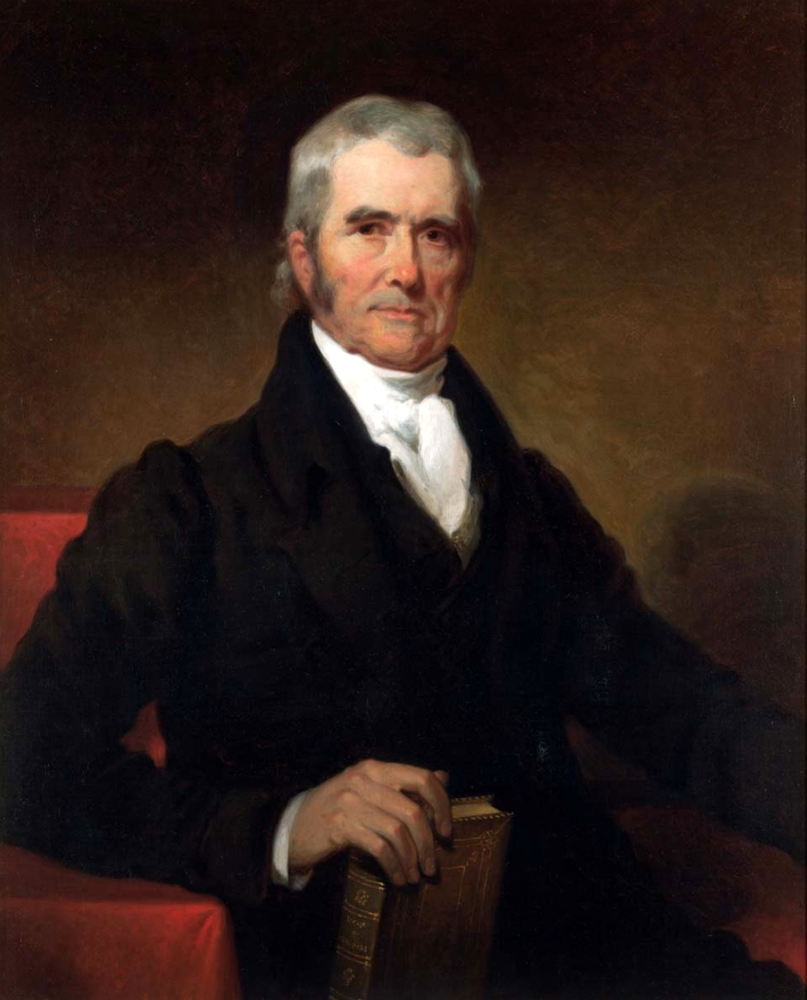
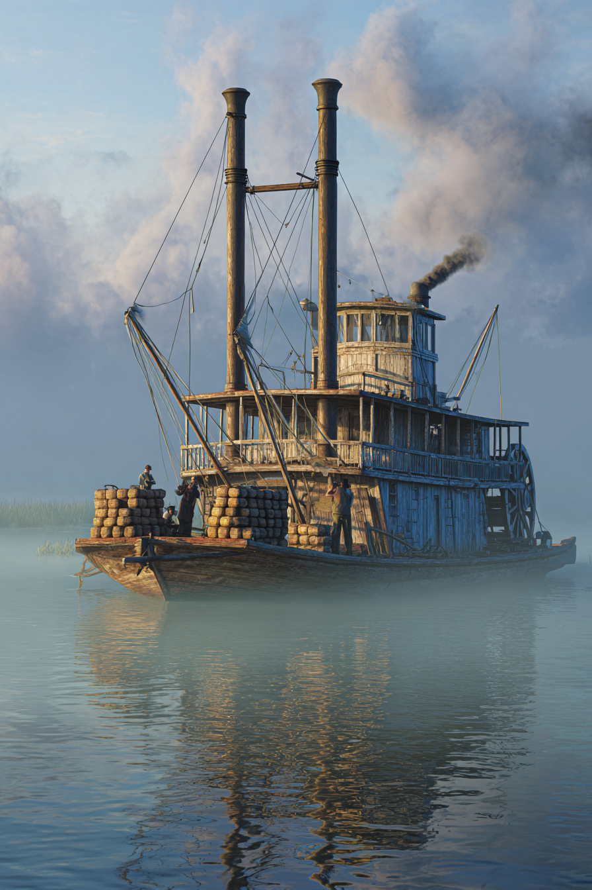
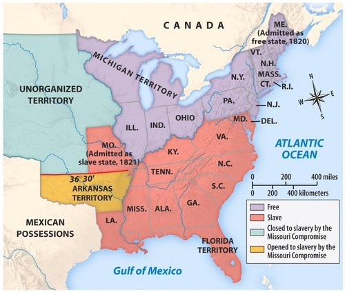

Whigs and Democrats
Chapter 11
Lecture 1: Post-War of 1812 Political Events
By the end of today, you should be able to:
- Explain the three parts of the American System and why they work as a "system"
- Analyze how Marshall Court decisions shifted power from states to federal government
- Argue whether the Missouri Compromise solved or merely postponed the sectional crisis
- Connect the Panic of 1819 to later political opposition to the Second Bank
National Republicans
- By the end of the War of 1812, the Federalist Party was no longer a significant force in American Politics
- Era of Good Feelings (one-party dominance)
- Irony: Republicans adopt Federalist policies after Federalists disappear
Henry Clay's American System (1816)
Three interconnected policies to build American economic power:
1. Protective Tariff
- Tax on foreign imports protects American manufacturers
- Makes American-made goods competitive
2. Second Bank of the United States
- National bank controls currency and credit
- Provides stable financial system for growth
3. Federal Internal Improvements
- Roads and canals connect markets
- Farmers can get crops to ports; factories can ship goods
Why "System"? → Each part reinforces the others. Tariffs protect factories → factories need reliable banking → both need transportation to reach customers.
Internal Improvements: The Nationalist Dream Fails
The Constitutional Problem:
- Constitution doesn't explicitly grant Congress power to build roads/canals
- Madison vetoes Bonus Bill (1817): "I cannot find this power in the Constitution"
- Monroe agrees: federal internal improvements unconstitutional
The Sectional Problem:
- North/West: Want federally funded roads and canals
- South: Opposes federal spending that mainly benefits other regions
- Question: Who pays? Who benefits?
The Result: Federal government largely stays out • States build their own infrastructure (Erie Canal built by New York) • First crack in post-war nationalism
John Marshall Reshapes American Government
John Marshall, Chief Justice (1801–1835)
- Serves 34 years—longer than most presidents
- Appointed by John Adams (Federalist), outlasts his party
Marshall's Project: Building Federal Power
Before Marshall → Weak federal government, strong states
After Marshall → Strong federal government, national economy

Chief Justice John Marshall (1755–1835)
How? Three landmark cases:
- Can Congress create a national bank?
- Can states break contracts?
- Who controls interstate trade?
Watch for the pattern: Marshall consistently chooses federal power over state power
McCulloch v. Maryland (1819)
The Case:
- State of Maryland levies tax on Baltimore branch of the Bank of the United States
- Maryland's goal: Tax the Bank out of existence
Two Questions:
1. Does Congress have the right to charter a bank?
- Marshall's answer: YES
- Constitution grants "implied powers" beyond what's explicitly written
2. Can states tax federal agencies?
- Marshall's answer: NO
- "The power to tax is the power to destroy"
- States cannot destroy what Congress creates
Significance: Establishes doctrine of "implied powers" • Federal law is supreme over state law
Dartmouth College v. Woodward (1819)
The Case:
- New Hampshire tries to take over Dartmouth College
- Wants to convert private college into state university
Marshall's Decision:
- Original charter is a protected contract
- States cannot violate or break private contracts
- Even if "public good" might be served
Significance:
- Businesses can hold charter privileges indefinitely
- States cannot revoke corporate charters
- Protects private property from state interference
- Lays groundwork for corporate power
Gibbons v. Ogden (1824): Who Controls Trade?
The Conflict:
- Aaron Ogden: Operates steamboats with New York state monopoly license
- Thomas Gibbons: Operates steamboats with federal license
- Both run steamboats in same waters (Hudson River/NY harbor)
- Question: Whose license wins—state or federal?
Why It Matters:
- If states control trade → 13+ different trade rules, barriers between states
- If federal government controls trade → unified national market

Steamboat on the Mississippi River (c. 1824)
Marshall's Decision: Federal government has exclusive power over interstate commerce • State monopoly is unconstitutional • Federal law > State law
Marshall Court: Winners and Losers
The Pattern Across All Three Cases:
- Federal power ↑ / State power ↓
- National economy ↑ / Local control ↓
- Business/property rights ↑ / Government regulation ↓
Who Benefits?
- Federal government (more power)
- Businesses and corporations (protected contracts, free trade)
- Nationalists (unified country, strong center)
Who Loses?
- State governments (less autonomy)
- States' rights advocates (especially in South)
- Those who fear concentrated power
The Legacy: Sets up conflicts that will explode in Nullification Crisis and ultimately Civil War
Marshall Court: Shifting the Balance of Power
FEDERAL POWER
STATE POWER
CORPORATE POWER
COMMERCE POWER (Federal control)
Key Principle: Federal supremacy over states in all disputes
Think About It
"If you were a cotton planter in Georgia in 1820, would you support Marshall's Supreme Court decisions? Why or why not?"
Consider:
- Federal vs. state power—which do you want?
- Protection of business contracts—does this help or hurt you?
- Federal regulation of commerce—who benefits?
1 minute to think, then voluntary discussion
1819: Year of Crisis
Two major crises reveal the limits of post-war nationalism
The Argument over Missouri
The Request:
- Missouri applies for statehood (first state from Louisiana Purchase)
- Would enter as a slave state
The Challenge:
- Rep. James Tallmadge Jr. (NY) proposes amendments:
- Ban on importing enslaved people into Missouri
- Gradual emancipation for those born after statehood (freedom at age 25)
- Result: Would make Missouri a free state
The Reaction:
- Fierce sectional debate in Congress
- House (Northern majority) passes amendments
- Senate (Southern control) blocks amendments
- Congress deadlocks—first major sectional crisis over slavery's expansion
Missouri: It's About Power, Not Morality
Why This Debate Mattered: POLITICAL POWER
The Three-Fifths Compromise gives South extra representation:
- Enslaved people count as 3/5 of a person for representation
- In 1790: South holds 47% of House seats with only 40% of white population
- Gives Jefferson the presidency in 1800 (electoral college advantage)
- North fears this advantage grows with each new slave state
The Sectional Balance:
- North dominates House (more total population)
- South controls Senate (equal state representation: 11 free, 11 slave states)
- Each new state tips the balance
Senator Rufus King (NY): Opposition based on "great political interests" and equality of representation—not humanitarian concern
The Missouri Compromise (1820)
The Deal:
- Missouri admitted as slave state
- Maine separated from Massachusetts, admitted as free state
- Maintains Senate balance: 12 free states, 12 slave states
- Slavery banned in Louisiana Purchase territory above 36°30' latitude
- Drew a line across the western territories
The Reaction:
- Temporarily resolves the crisis
- But exposes deep rift between North and South
- Thomas Jefferson: "a fire bell in the night"—warning of disaster ahead
The Missouri Compromise Line (36°30')

Missouri Compromise (1820) – Expansion of slavery and sectional balance
Take 20-30 seconds to study this map
Notice: Most of Louisiana Purchase would be free under this line • South realizes it's losing the long-term demographic/political game • This line will be fought over for the next 30 years
Think-Pair-Share
"The Missouri Compromise 'solved' the problem by drawing a line on a map. Why might this be a temporary solution rather than a permanent fix?"
Instructions:
- Think individually (30 seconds)
- Discuss with your neighbor (1-2 minutes)
- Share with class (voluntary)
Possible insights: Line is arbitrary • Doesn't resolve underlying disagreement about slavery • What happens with territories that don't fit the line? • Both sides still want political power • Just postpones the conflict
The Panic of 1819: America's First Depression
First nationwide economic depression in U.S. history
The Perfect Storm (Three Causes):
1. International: European farms recover after Napoleonic Wars
- Less demand for American grain
- Crop prices collapse
2. Latin America: Revolutions disrupt gold/silver supplies
- Currency becomes unstable
3. Domestic: U.S. banks expand credit recklessly
- Everyone borrows to buy land
- Speculation creates inflation bubble
The Trigger: Cotton prices collapse → Credit bubble bursts → Banks demand immediate repayment
The Panic of 1819: Human Cost and Political Fallout
The Bank's "Solution":
- Langdon Cheves (president of Second Bank) demands immediate repayment
- Forces state banks to pay in specie (gold/silver coins, not paper)
- Result: Saves the Bank BUT destroys local economies
The Human Toll:
- Philadelphia: 75% unemployed
- Tent cities spring up in Baltimore and other cities
- Farms foreclosed, sold for pennies on the dollar
- Families lose everything overnight
Political Consequences:
- Public rage turns toward the Second Bank
- Nicknamed "The Monster"
- "The Bank was saved—and the people were ruined"
- Plants seeds of Jackson's Bank War (1830s)
Review: Can You Now...
- Explain the three parts of the American System and why they work as a "system"
- Analyze how Marshall Court decisions shifted power from states to federal government
- Argue whether the Missouri Compromise solved or merely postponed the sectional crisis
- Connect the Panic of 1819 to later political opposition to the Second Bank
If any of these are still unclear, see me after class or in office hours
Next Class: Jacksonian Democracy and the Social World
- How did ordinary Americans live in this era?
- Working class, immigrants, free Black communities
- Popular culture and entertainment